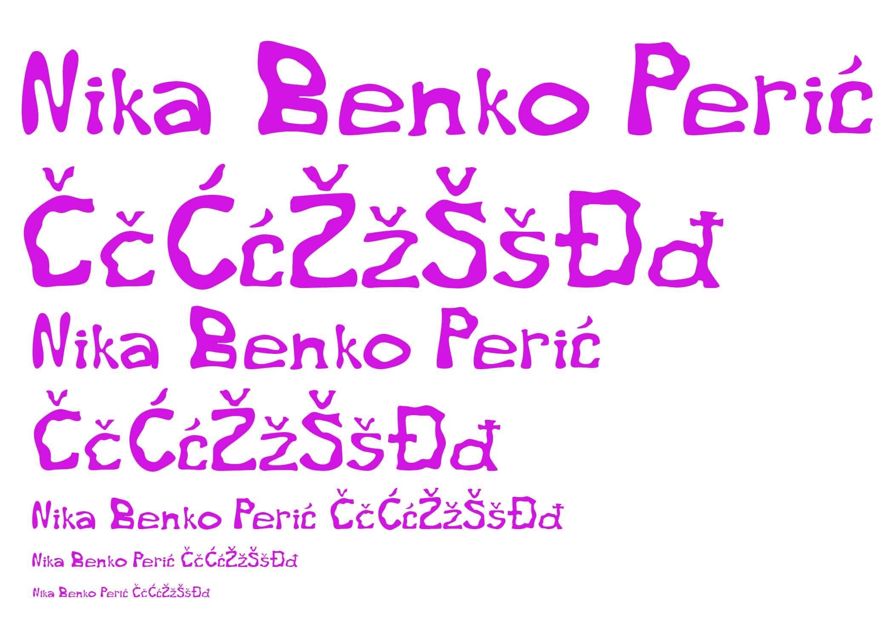
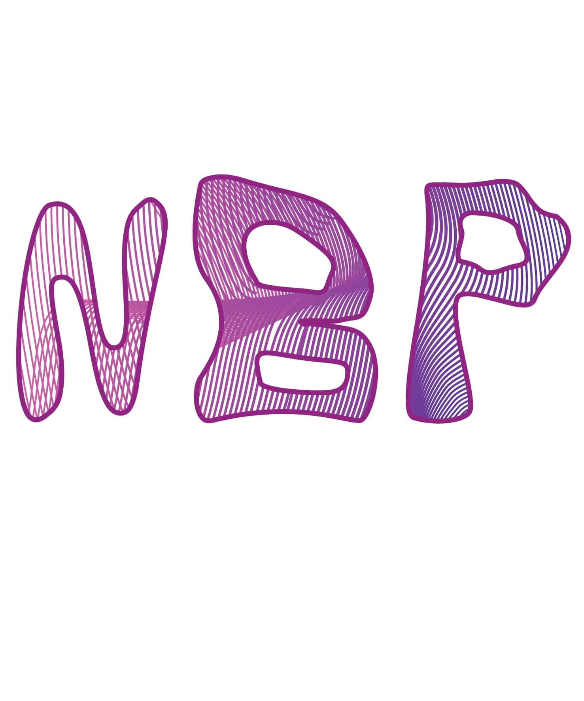
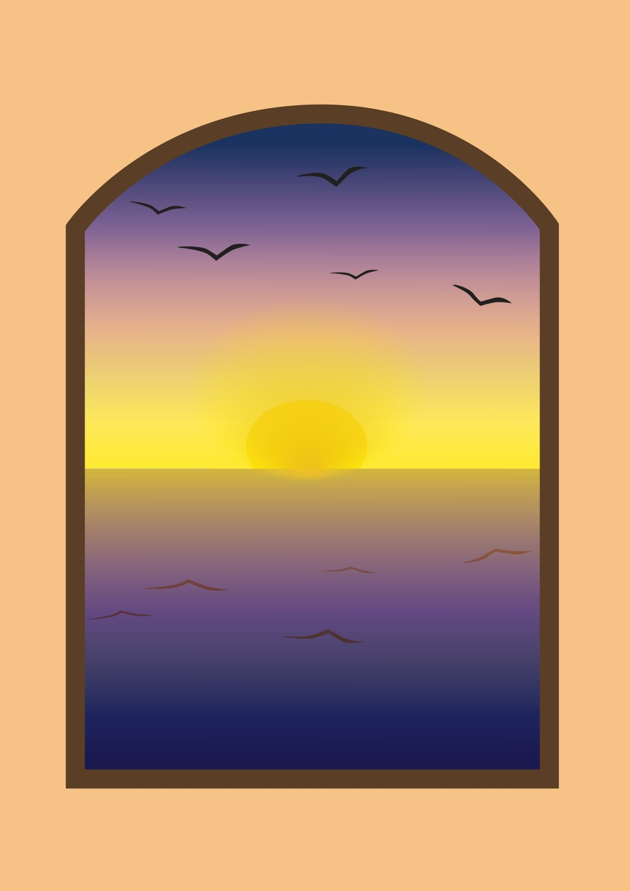
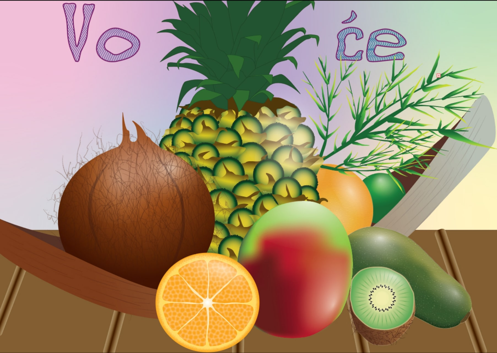
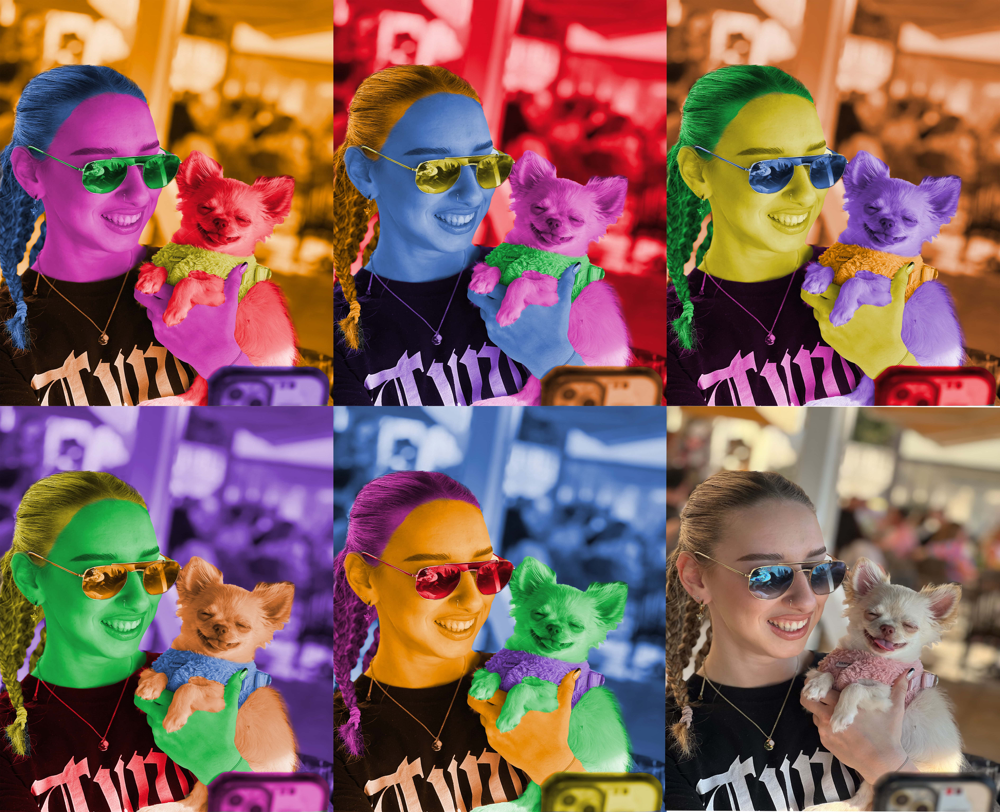
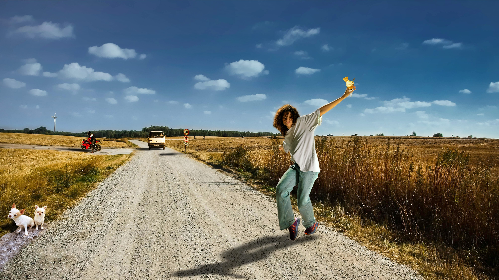
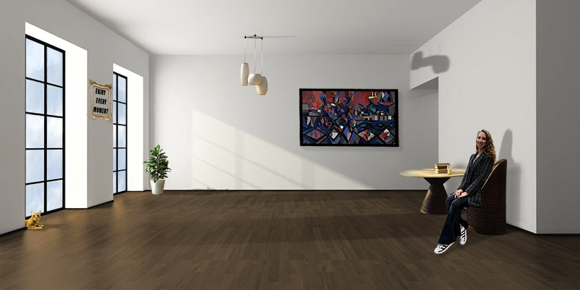
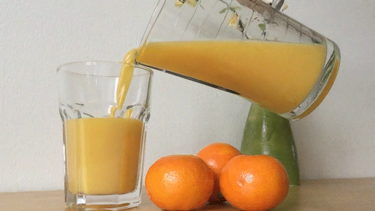

Početna
O Meni
Vježbe
Video

Vježba 1 - Fontographer
Izrada vlastitog fonta.

Vježba 2 - Illustrator
Izrada osobnih inicijala pomoću Bezierove Krivulje.
Vježba 3 - Illustrator
Izrada slike pomoću predloška i primjena color grupa (swatcheva).

Vježba 4 - Illustrator
Izrada složenih objekata, upotreba gradijenata.

Projekt 1 - Illustrator
Upotreba vlastitog fonta, te pomoću Bezirovih krivulja iscrtan predložak. Upotrebljeni elementi iz prethodnih vježbi.
Vježba 5 - Photoshop
Postizanje realističnog efekta fotografije uz pomoć tehnike digitalnog retuširanja.

Vježba 6 - Photoshop
Upotreba tehnika digitalnog koloriranja fotografije.

Vježba 7 - Photoshop
Upotreba tehnika selektiranja različitih tipova elemenata slike, fotomontaža.

Projekt 2 - Photoshop
Kreiranje slike kao kompozocije više fotografija koristeći elemente iz prethodnih vježbi.

Vježba 8 - Premiere Pro
Kinemagraf napravljen uz pomoć karakterističnog spajanja statične i pokretne slike.
Vježba 10. i 11.